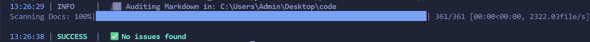

Markdown Auditor


A sleek, nerdy Python utility designed to scan your project directories for documentation debt. It crawls through your folders, ignores the "noise" (like node_modules and .vscode), and ensures your Markdown files are professional and accessible.
📸 Screenshots

✨ Features
Recursive Scanning: Deep-dives into subdirectories to find every .md file.
Alt-Text Check: Identifies images missing descriptions (
) to improve SEO and accessibility.
Broken Link Detection: Finds empty Markdown links () before you ship them.
Smart Filtering: Automatically ignores node_modules, .venv, .vscode, and other non-source folders.
Professional Logging: Powered by Loguru for timestamped, color-coded terminal output and persistent log files.
Progress Tracking: Includes a tqdm progress bar.
🚀 Getting Started
Prerequisites You'll need Python 3.8+ installed. You also need to install the two main dependencies:
pip install loguru tqdm
🛠️ Installation
Clone or copy the auditor.py script into your workspace.
Ensure you have a .gitignore file to keep your logs out of version control.
Usage
- Run the script from your terminal. You can point it at any folder:
PowerShell
Audit the current directory
python auditor.py .
Audit a specific project folder
- for eg
python auditor.py C:UsersAdminDesktopcode
🛠️ How it Works
The auditor performs a three-step operation to keep your environment fresh:
The Scout: It builds a manifest of all Markdown files while pruning "junk" directories.
The Audit: It uses Regular Expressions (Regex) to scan the text content for empty brackets and parentheses.
The Report: Results are summarized in the terminal and appended to audit_history.log for future reference.
📂 Project Structure
markdown_auditor/
├── auditor.py # The main script
├── screenshots # png of script in action
├── audit_history.log # Generated log file (ignored by git)
├── .gitignore # Keeps your repo clean
🛣️ Roadmap Features
[ ] Auto-Fix Mode (--fix) Add a flag that allows the script to automatically inject "TODO" text into empty brackets.
[ ] External Link Validator Level up from checking if a link is empty to checking if it actually works.
[ ] Frontmatter Metadata Audit If you ever use static site generators (like Jekyll, Hugo, or Obsidian), your files usually start with "Frontmatter" (tags, dates, and titles).
[ ] Duplicate Image Scanner Make a script that could track the filenames of every image used and flag any duplicates.
📝 Notes
This project is open-source and ready for you to expand. Happy coding!🐍
- Built by Roy Peters 😁